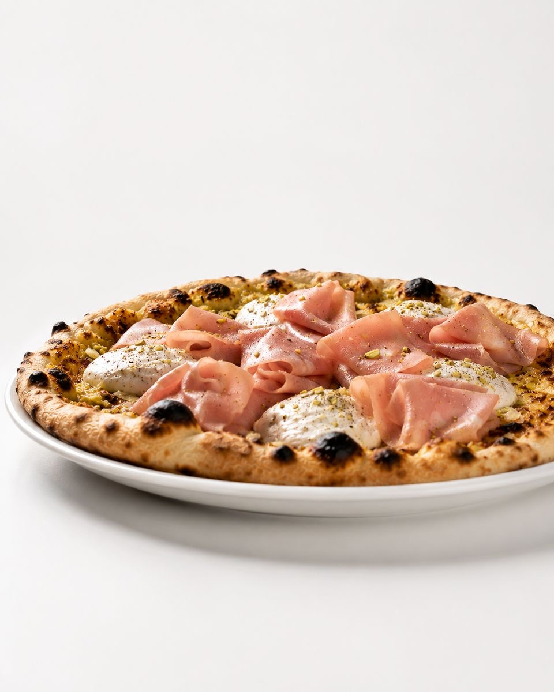
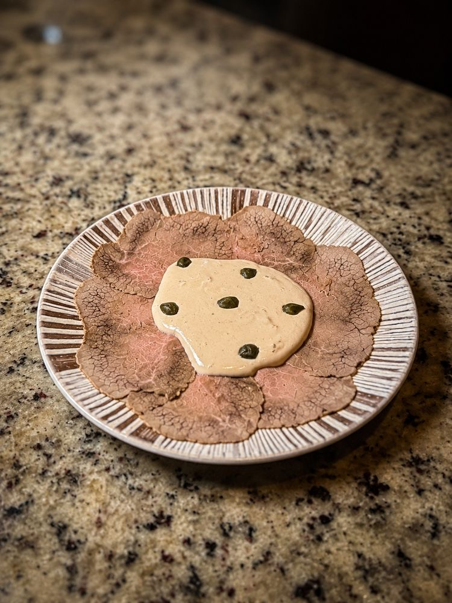
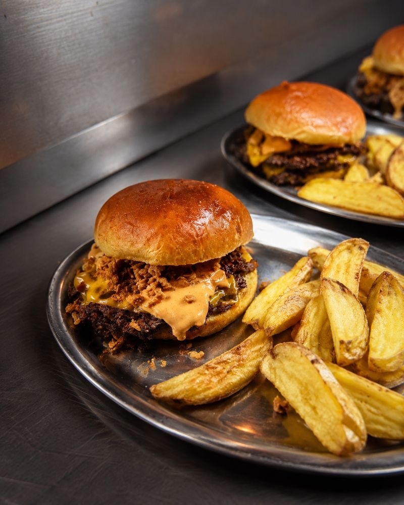

Da Luciano · Calpe · Costa Blanca
La auténtica cocina italiana de Calpe
Pizzas al horno, pasta fresca, risotto, carnes a la brasa, pollo asado y postres caseros. Recetas de familia que Luciano cuida al detalle, con la misma pasión desde hace 14 años.
Abierto todos los días · 08:00 a 00:00

Nuestra carta
Para comer como en Italia
Precios en euros, IVA incluido. V = vegetariano. ¿Alergias o intolerancias? Pregúntanos antes de pedir; te decimos qué lleva cada plato.

Nuestra historia
Da Luciano, una familia italiana en Calpe
La historia empezó en 1998, cuando la familia abrió sus primeras puertas en Calpe. De aquellos años viene lo que hoy nos define: cocinar como se cocina en casa, con recetas originales heredadas de generación en generación.
Hace 14 años nació Piazza di Spagna, y con ella un sitio al que la gente vuelve una y otra vez: para desayunar, para una comida rápida, para una cena tranquila o para celebrar en grupo. Masa fermentada con calma, pasta fresca, salsas que hierven despacio y una mesa donde todo el mundo se siente bienvenido.
Ci vediamo a tavolaLuciano · Piazza di Spagna
Galería
Un vistazo a la mesa



Encontrarnos
Te esperamos en Calpe
- Dirección
- Avinguda Jaume I el Conqueridor, 3
03710 Calpe, Alicante - Horario
- Lunes a domingo: 08:00 – 00:00
Desayunos, comidas, cenas y para llevar.
Reserva o pide para llevar
Llámanos a cualquiera de estos números. También preparamos todo para llevar.